The AMY Additive Piano Voice
The piano is a versatile and mature instrument. One reason for its popularity is its wide timbral range; in fact, its main innovation was the ability to play notes both loud and soft, hence "Pianoforte" (its full original name).
To make AMY into a truly general-purpose music synthesizer, we wanted to add a good piano voice. But it's not simple to synthesize a good piano voice. This page explains some of what makes piano synthesis challenging, and how we addressed it. Our approach was to use additive synthesis, which nicely fills out the demonstration of the primary synthesis techniques implemented in AMY, after subtractive (the Juno-6 patches) and FM (the DX7 patches).
The sound of a piano
Here's an example of 5 notes played on a real piano:
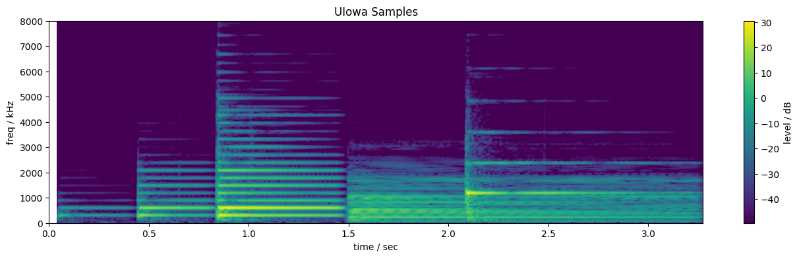
This clip starts with a D4 note played at three loudnesses - pp, mf, and ff. These are followed by a D2 (two octaves lower), and a D6 (two octaves higher). (I made this example by adding together isolated recordings of single piano notes from the University of Iowa Electronic Music Studios Instrument Samples, which are the basis of the AMY piano. I combined them with the code in make_piano_examples.ipynb.)
Some things to notice:
- Piano sounds consist of very strong, stable sets of harmonics (fixed-frequency Fourier components), visible as horizontal lines in the spectrogram. The harmonics appear mostly uniformly-spaced (as expected for a Fourier series of a periodic signal) (although there are a few extra components e.g. around 4.5 kHz at 0.8 seconds for the ff D4).
- Each harmonic starts at its peak amplitude, then decays away. The higher harmonics decay more quickly. Higher notes, whose harmonics are naturally all at higher frequencies, die away more quickly than lower notes.
- The first three notes have the same pitch, so the harmonics have the same frequencies. However, as the note gets louder, not only do the lower harmonics grow in intensity (brighter color), we also see additional higher harmonics appearing. This is the vital "brightening" of piano sounds as the strike strength increases.
- The D2 is too low for the harmonics to be resolved in this spectrogam, but we can see a complex pattern of time modulation in its energy. We can also see a complex pattern of per-harmonic modulations in the D6.
Synthesizing piano sounds
Electronic musical instruments have always taken inspiration from their acoustic forbears, and most electronic keyboards will attempt to simulate a piano.
Let's set up a function in AMY (which runs in this web page in Python, you can edit the code!) that plays the recorded pattern above on some AMY presets:
The Roland Juno-60 included a preset called Piano, which we can now hear with
(Try changing the base_note or volume or the patch number and running again)
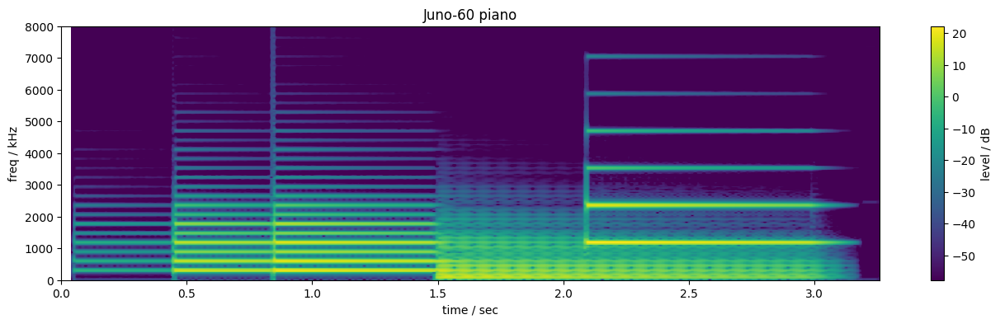
This synthetic piano gets the stable harmonic structure and steady decay of each note, but there's no change in timbre with the different note velocities; every harmonic gets louder by the same factor. (In fact, the Juno-60 was not velocity sensitive, but its usual practice to scale the whole note in proportion to velocity). There's no complexity to the harmonic decays, they are uniformly monotonic. And the overall note decay time doesn't vary with the pitch.
The DX7 similarly provides a number of presets claiming to be pianos, including 135-137 (in our numbering which starts at 128):
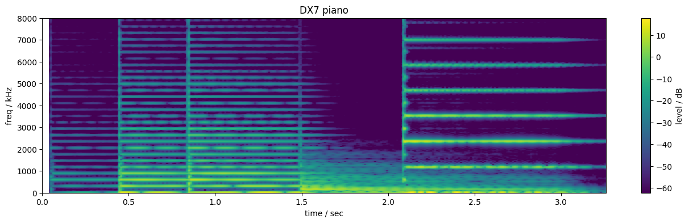
This sounds more like a DX7 than any acoustic instrument. It does manage to bring some modulation on top of the decays of the harmonics (visible as gaps in the horizontal lines) but is not very convincing.
Additive synthesis
The horizontal lines in the spectrogram are simply sinusoids at fixed frequencies with slowly-varying amplitudes; the essence of Fourier analysis is that any periodic signal can be built up by summing sinusoids at integer multiples of the fundamental frequency (the lowest sinusoid). We can use this directly to synthesize musical sounds, so-called "additive synthesis", and AMY was originally designed for this very purpose. We use one oscillator for each harmonic, and set up its amplitude envelope to be a copy of the corresponding harmonic in a real piano signal. (I wrote code to analyze the UIowa piano sounds into harmonic envelopes in piano_heterodyne.ipynb.)
Let's start by loading in the analysis. We're using ulab, which is a numpy-like written for Micropython (what this web page is using.)
Now, let's set up some code to return the interpolated harmonics from a MIDI note and velocity for the piano.
And then some AMY helper code to send out these parameters to the right voices. We're using the BYO_PARTIALS type in AMY, which allows you set up your own partial synthesis breakpoints using envelopes.
We can now set up a BYO_PARTIALS patch #1024 in AMY with independent per-harmonic envelopes. We set up the piano once, pre-configured to C4.mf for each note and scaled during playback. We're setting 20 breakpoints independently for 20 harmonics with data read from the piano-params.json file written by piano_heterodyne.ipynb.
And play those:
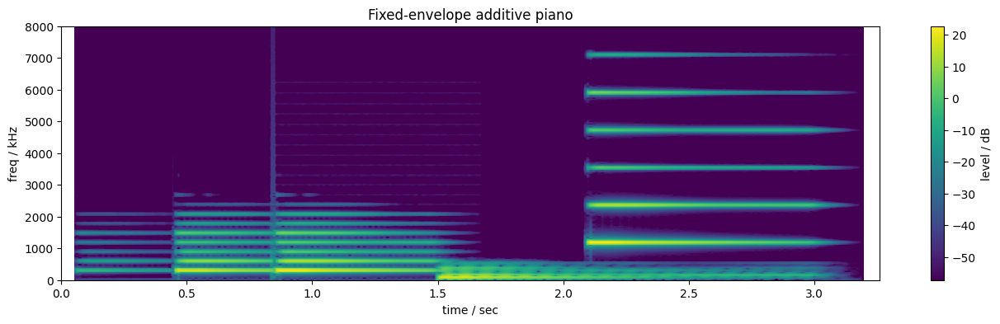
The mf D4 note now sounds quite realistic, because it's a reasonably accurate reproduction of the original recording. However, we're still simply scaling its overall magnitude in to get different veloicities. And when we change the pitch, we just squeeze or stretch the harmonics (and hence the notes' spectral envelopes), which is not at all realistic sounding.
Instead, we need to interpolate the real piano recordings at different notes and strikes to get the actual envelopes we synthesize. The UIowa samples provide recordings of all 88 notes on the piano they sampled, at three strike strengths. We could include harmonic data for all of them, but adjacent notes are quite similar, so instead we encode 3 notes per octave (C, E, and Ab) and interpolate the 3 semitones between each adjacent pair. (We currently store only 7 octaves, C1 to Ab7, so 21 pitches).
For velocity, we have no choice but to interpolate, since the three recorded strikes do not provide enough expressivity for performance. We analyze all three (for each pitch stored, so 63 notes total).
Playing a note, then, involves interpolating between four of the stored harmonic envelope sets (recall that each set consists of 20 breakpoints for up to 20 harmonics): To synthesize the D4 at, say, velocity 90, we use C4 at mf and ff (which I interpreted as velocities 80 and 120) as well as E4 mf and ff. By doing this interpolation separately for every (note, velocity) event, we get a much richer range of tones. In this case we recompute the piano voice on each note on, given the note number and velocity:
Let's hear this much nicer version:

This recovers both the spectral complexity of the original piano notes, and the variation of the spectrum both across the keyboard range and across strike intensities. The spectrogram of the original recordings is repeated below for comparison.
While there are plenty of details that have not been exactly preserved (most notably the noisy "clunk" visible around each onset of the recordings, but also the cutoff at 20 harmonics, which loses a lot of high-frequency for the low note), this synthesis just feels much, much more realistic and "acoustic" than any of the previous syntheses.
Because we are representing each note as an explicit set of harmonics, we can do things that would be very hard with, e.g., a sample. By messing with the status of the PARTIALs oscs, we can listen to each partial individually:
By restricting the number of partials the control osc things it is driving, we can listen to syntheses with different numbers of partials:
We can also change the tuning of each harmonic away from what was provided by the analysis. For instance, we can retune them to have different inharmonicities (see below for a discussion of piano inharmonicity):
We can also do interesting things with interpolation. For instance, we can interpolate pitches more finely than the standard semitones:
By using interpolation factors outside the range (0, 1) we can even extrapolate the strike strength:
If you're curious about exactly how we extracted the harmonic frequencies and envelopes, the rest of this page provides an overview of the process implemented in piano_heterodyne.ipynb.
If you have a Tulip or want to try Tulip on the web, you can play this piano synthesis live with a MIDI device. Use the Voices app to switch to the dpwe piano (256) patch, or type midi.config.add_synth(channel=1, patch_number=256, num_voices=4).
Extracting harmonic envelopes
How exactly to we capture the envelopes for each harmonic in our additive model? In principle, this is simply a matter of dissecting a spectrogram of the individual note (like the images above) to measure the intensity of each individual horizontal line. In practice, however, I wanted something with finer resolution in time and frequency to obtain very accurate parameters. I used heterodyne analysis, which I'll now explain.
The Fourier series expresses a periodic waveform as the sum of sinusoids at multiples of the fundamental frequency ("harmonics"), with the phases as amplitudes of each harmonic determining the resulting waveform. It's mathematically convenient to describe these sinusoids with complex exponentials, essentially sinusoids with two-dimensional values at each moment, where the real axis part is our regular sine, and the imaginary (2nd) axis part is the cosine (sine phase-shifted by 90 degrees):
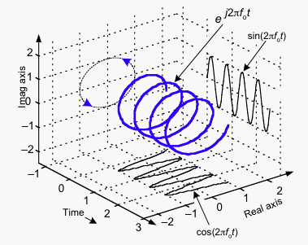
Each sinusoid is constructed as the sum of a pair of complex exponentials with positive and negative frequencies; the imaginary parts cancel out leaving the real sinusoid. Thus, the full Fourier spectrum of a real signal has mirror-image positive and negative parts (although we generally only plot the positive half):
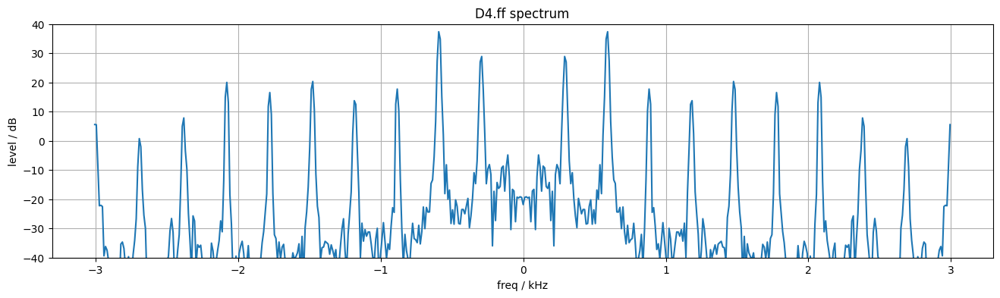
The neat thing about this complex-exponential Fourier representation is that multiplying a signal by a complex exponential is a pure shift in the Fourier spectrum domain. So, by multiplying by the complex exponential at the negative of a particular harmonic frequency, we can shift that harmonic down to 0 Hz (d.c.). The spectrum is no longer mirrored around zero, so the imaginary parts won't cancel out, but we only want its magnitude anyway. Then, by low-pass filtering (i.e., smoothing) that waveform, we can cancel out all the other harmonics leaving only the envelope of the one harmonic we are targeting. By smoothing over a window that exactly matches the fundamental period, we can exactly cancel all the other sinusoid components because they will complete a whole number of cycles in that period. See make_piano_examples.ipynb for how these figures were prepared:
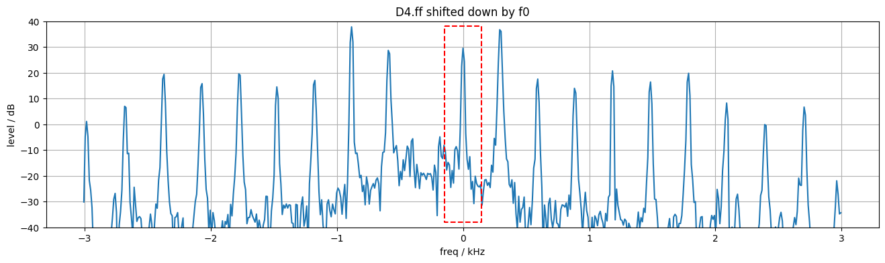
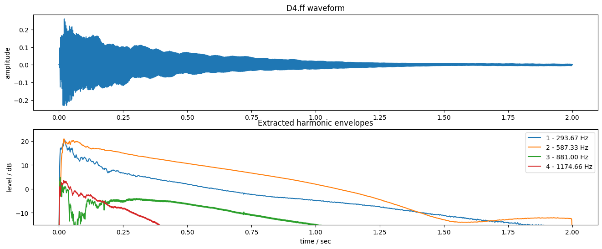
Finding harmonic frequencies and piano inharmonicity
The heterodyne extraction allows us to extract sample-precise envelopes for harmonics at specific frequencies, but we need to give it the exact frequencies we want it to extract. Again, in principle, this is straightforward: The harmonics should occur at integer-multiples of the fundamental frequency, and if the piano is tuned right, we already know the fundamental frequences for each note.
It turns out, however, that piano notes are not perfectly harmonic: They can be well modeled as the sum of fixed-frequency sinusoids, but those sinusoids are not exact integer multiples of a common fundamental. This is a consequence of the stiffness of the steel strings (I'm told!) which makes the speed of wave propagation down the strings higher for higher harmonics. This piano inharmonicity has been credited with some of the "warmth" of piano sounds, and is something we want to preserve in our synthesis. In order to precisely extract each harmonic for each note, we need to individually estimate the inharmonicity coefficient for each string (because the strings are all different thicknesses, the inharmonicity varies across the range of the piano).
I estimated the inharmonicity by extracting very precise peak frequencies from a long Fourier transform of the piano note, then fitting the theoretical equation
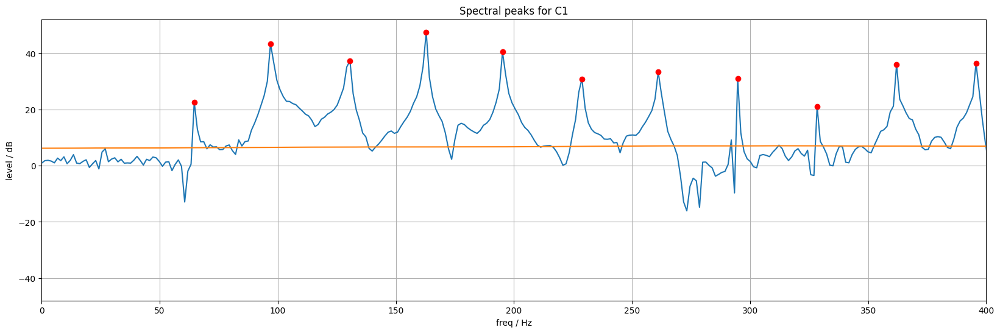
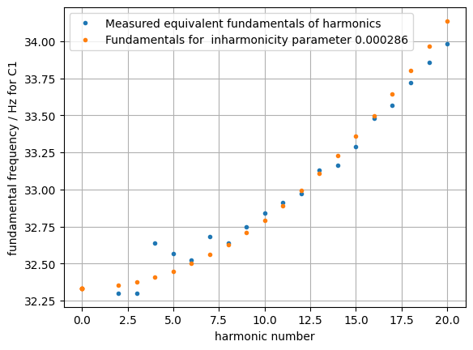
These plots come from the "Inharmonicity estimation" part of piano_heterodyne.ipynb. Estimating the inharmonicity for each note allowed me to extract harmonic envelopes precisely corresponding to each specific harmonic of each piano note. This was important because when we are interpolating between different harmonic envelopes, we want to be sure we're looking at the same harmonic in both notes.
Describing envelopes
We can extract sample-accurate envelopes for as many harmonics as we want for each of the real piano note recordings we have. But to turn them into a practical additive-synthesis instrument on AMY we need to think about efficiency. Right now, the harmonic envelopes are represented as 44,100 values per second of recording, and we're modeling something like the first 5 seconds of each note (the low notes can easily be 20 seconds long before they decay into oblivion). But the AMY envelopes can only handle up to 24 breakpoints (it used to be 8 before I changed it to serve this project!) so we need some way to summarize the envelopes in a smaller number of straight-line segments (which is what the envelope breakpoints define).
Additive synthesis of individual harmonics is so powerful because sounds like piano notes are so well described by a small number of harmonics with constant or slowly-changing frequency and amplitude. Looking at the four harmonic envelopes extracted in the previous section, it's obvious that the long tails are almost entirely smooth and could be described with a small number of parameters. The initial portions are more complex, however, including going up and down. Reproducing them will need more breakpoints, and it's not immediately obvious how to choose those breakpoints to give the best approximation.
I spent a while trying to come up with ad-hoc algorithms to accurately match an arbitrary envelope with a few line segments - see the "Adaptive magnitude sampling" section of piano_heterodyne.ipynb. The goal was to choose breakpoint times (and values) that preserved the most detail of the original envelope, even though I couldn't define exactly what I wanted. However, the outcome was naturally that there would be different breakpoint times for each note, which made interpolation between different notes very problematic - can we interpolate the breakpoint times too? (I tried it, and it fared badly in practice because of wildly varying allocations of breakpoints to different time regions).
In the end I gave up and used a much simpler strategy of predefining a set of breakpoint sample times that are constant for all notes. Although this is inevitably sub-optimal for any given note, it gives a much more solid foundation for interpolating between notes. And it turns out that the accuracy lost in modeling the envelopes doesn't seem to be too important perceptually. To respect the idea that the envelopes have an initial period of considerable detail, followed by a longer, smoother evolution, I used exponential spacing of the sampling times. Specifically each envelope is described by samples at 20 instants: 4, 8, 12, 16, 24, 32, 48, 64, 96, 128, 192, 256, 384, 512, 768, 1024, 1536, 2048, 3072, 4096 milliseconds after onset. After the initial value, these are in a pattern of
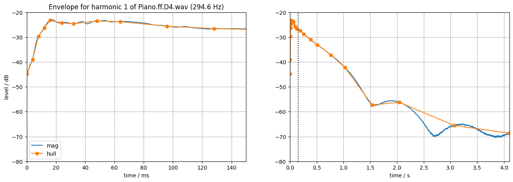
Although a bunch of detail has been lost, it still provides a suitably complex character to the resyntheses.
These 20 envelope samples, along with the measured center frequency, are then the description for each of the up-to 20 harmonics describing each of the (7 octaves x 3 chroma x 3 strike strengths) notes, or about 1200 envelopes total. This is the data stored in piano-params.json and read by tulip_piano.py.
This is a lot of data to get your head around! It's 4 dimensional - envelope magnitude as a function of time, harmonic number, fundamental pitch, and strike strength. There's still a lot of investigation to be done, but here's a 3D plot of the modeled harmonic envelopes (up to harmonic 20) for the three different strike strengths of C4 (261.63 Hz):
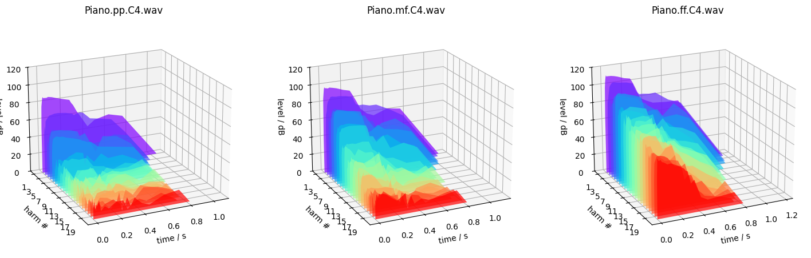
We can see the trend of energy dropping off with harmonic number in every case, and the harmonic magnitudes getting larger for stronger strikes. But notice also that while the max magnitude of the first harmonic (purple) increases from 85 dB for _pp_ to 110 dB for _ff_ (about 25 dB), the max energy of the 20th harmonic (red) increases from under 20 dB to over 60 dB - maybe a 45 dB increase. This is the relative "brightening" of the timbre for louder notes.
If you have a Tulip or want to try Tulip on the web, you can play this piano synthesis live with a MIDI device. Use the Voices app to switch to the dpwe piano (256) patch, or type midi.config.add_synth(channel=1, patch_number=256, num_voices=4).
DAn Ellis - dan.ellis@gmail.com
Want more? Try Tulip
Run more AMY experiments in a REPL with Tulip for the Web. Try the piano there!
Discord
Join the shore pine sound systems Discord to chat about Tulip, AMY and Alles. A fun small community!
Join our email list
We'll send you very rare updates about Tulip, Alles, AMY and other projects we're working on.